Nesia Batik, portal online yang menggabungkan tradisi dan inovasi, bertujuan mendorong pertumbuhan UMKM di Indonesia dengan memfasilitasi produksi dan pemasaran kain batik berkualitas tinggi, sambil memberikan inspirasi dan dukungan bagi perajin lokal.
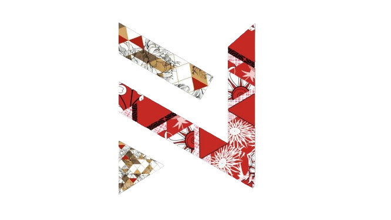
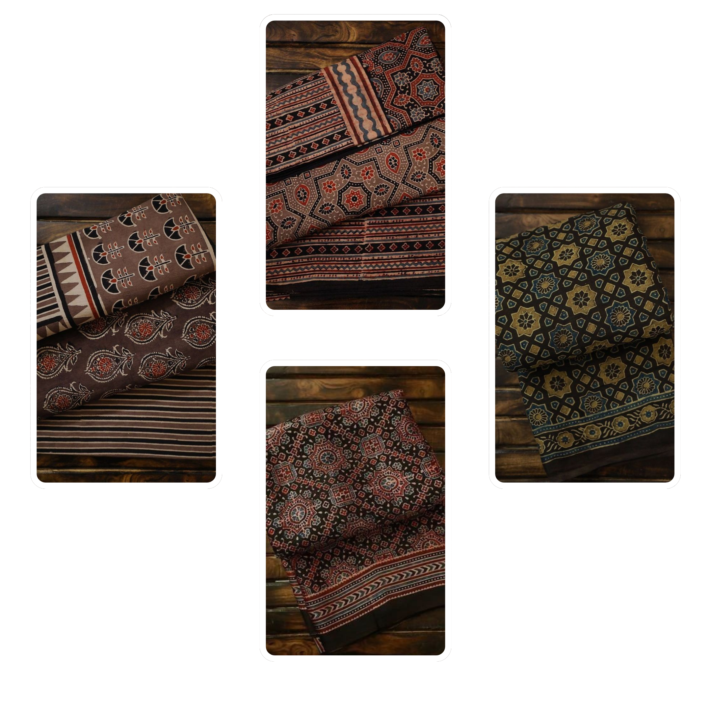
Kain Batik Berkualitas
Dengan stempel kekayaan budaya Indonesia, Nesia Batik menyajikan galeri produk yang memukau, memperkenalkan ragam motif dan teknik batik dari berbagai daerah. Setiap kain batik memiliki cerita tersendiri, dengan detail unik yang mencerminkan kekayaan tradisional dan kreativitas perajin lokal.
Nesia Batik bukan hanya tempat untuk berbelanja, melainkan juga pusat sumber daya bagi perajin lokal. Kami menyediakan panduan produksi, tutorial, dan berbagai informasi praktis lainnya untuk membantu UMKM meningkatkan kualitas dan kuantitas produksi mereka.
99+
Pengerajin Bergabung
30+
Clients
30+
Macam Kain
Education
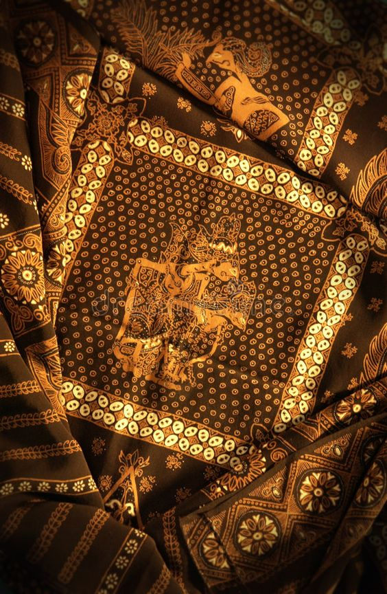
Kain Berkualitas
Bagaimana cara agar bisa membuat kain batik yang berkualitas
Kain Berkualitas!
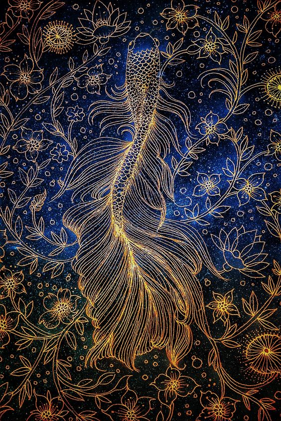
Untuk mendapatkan kain batik berkualitas, ada beberapa hal yang perlu diperhatikan. Berikut adalah beberapa tips yang dapat membantu Anda dalam memilih kain batik berkualitas tinggi:
1. Ketahui jenis batik yang akan dibeli: Sebelum membeli, perhatikan jenis batik yang ingin Anda beli. Ada dua jenis batik yang umumnya tersedia, yaitu batik tulis dan batik cap. Batik tulis biasanya memiliki kualitas yang lebih baik dibanding batik cap, karena memerlukan proses produksi yang lebih lama dan dibuat langsung dengan tangan sehingga lebih rumit serta membutuhkan keterampilan khusus. Hal ini yang membuat batik tulis memiliki kualitas lebih dibanding batik cap.
2. Bahan batik mempengaruhi kualitas kenyamanan: Setiap kain batik memiliki jenis bahan berbeda-beda. Jenis bahan sangat mempengaruhi kualitas batik tersebut. Sebaiknya pilih jenis bahan batik yang sesuai dengan kebutuhanmu, misalnya untuk acara formal atau pesta kamu bisa memilih bahan batik sutra. Atau, untuk acara sehari-hari kamu bisa memilih batik berbahan katun yang mudah menyerap keringat. Selain itu ada banyak lagi jenis bahan yang biasa digunakan untuk pembuatan batik, seperti kain serat nanas, kain paris, dan kain mori. Semakin berkualitas jenis bahan mempengaruhi kualitas batik itu sendiri.
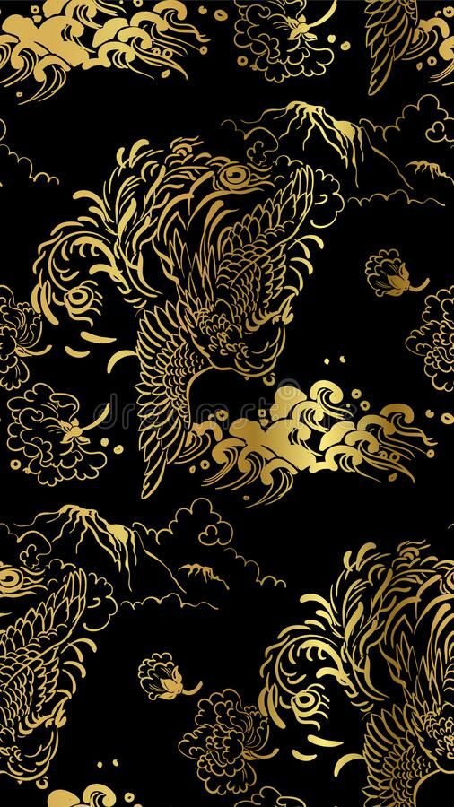
3. Semakin rumit motif batik, semakin ekslusif: Ada banyak motif batik di Nusantara, misalnya batik parang, mega mendung, sidomukti, batik loreng, dan lainnya. Semakin rumit motifnya, semakin tinggi nilai batik tersebut. Pilih batik dengan motif yang jarang dimiliki sehingga membuat batikmu terlihat ekslusif.
4.Cek kualitas cetakan batik kedua sisi kain: Pastikan kualitas cetakan batik pada kedua sisi kain sama baiknya. Hal ini menunjukkan bahwa kain batik tersebut berkualitas tinggi.
5. Batik berkualitas, anti luntur : Batik berkualitas tinggi biasanya tidak mudah luntur saat dicuci. Pastikan Anda membeli kain batik yang berkualitas tinggi agar warnanya tetap awet.
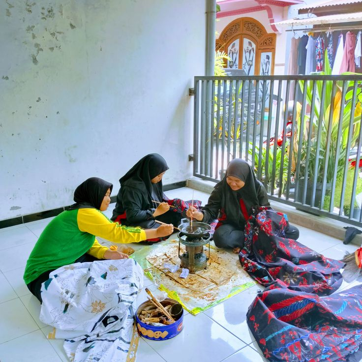
Produksi Batik
Panduan Produksi kain batik agar dapat bersaing di pasar
Kain Berkualitas!
Untuk membuat batik berkualitas, ada beberapa teknik yang dapat digunakan. Berikut adalah beberapa teknik pembuatan batik yang paling sering digunakan :
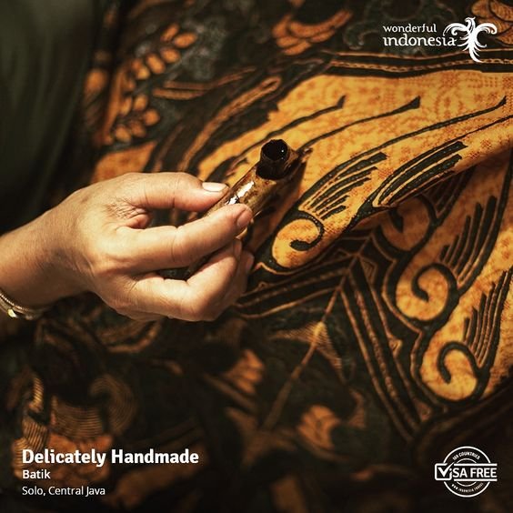1. Batik Tulis/Canting : Teknik pembuatan batik tulis atau canting adalah metode paling tua dan tradisional. Proses pembuatan batik masih menggunakan alat canting tradisional yang diisi dengan lilin panas sebelum digunakan untuk menggambar pola di atas kain. Setelah pola gambar ditutupi lilin, kemudian kain diwarnai. Bagian lilin kemudian dilepaskan dari kain. Dengan begitu, saat kain dimasukan dalam larutan pewarna, bagian yang tertutup lilin tidak terkena warna dan membentuk motif batik yang cantik. Teknik pembuatan batik dengan metode canting membutuhkan ketelitian tinggi. Tekstur dan motif batik dibuat manual menggunakan tangan. Tidak heran pembuatan batik dengan canting bisa memakan waktu 2 – 3 bulan. Meski begitu, harga batik tulis jauh lebih mahal dibanding batik biasa karena punya nilai seni tinggi.
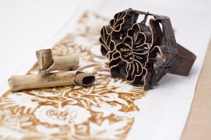2. Batik Cap : Teknik pembuatan batik cap muncul sekitar abad ke-20. Metode ini tidak menggunakan canting, melainkan cap yang terbuat dari tembaga berukuran 20 x 20 cm. Bagian tengah cap memiliki motif ukiran batik. Stempel akan dicelupkan ke dalam cairan malam lalu ditekan dengan keras di atas kain. Proses pembuatan batik dengan metode cap tergolong modern. Cara pembuatannnya sama seperti saat kita menggunakan stempel. Kelebihan dari metode ini adalah membuat proses pengerjaan batik lebih cepat. Proses pembuatan batik cap hanya memakan waktu 2 – 3 hari tergantung luas kain.
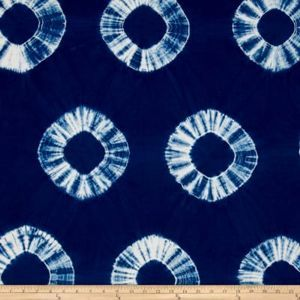3. Batik Ikat Celup (Tie-Dye) : Teknik pembuatan batik ikat celup atau tie-dye adalah metode pembuatan batik dengan cara mengikat bagian tertentu kain kemudian dicelupkan ke dalam cairan pewarna. Kemudian, kain batik harus dijemur untuk mendapatkan hasil yang bagus.
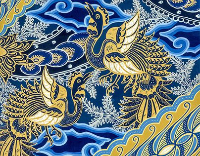4. Batik Lukis/Colet : Teknik pembuatan batik lukis atau colet adalah metode pembuatan batik dengan cara melukis langsung pada kain menggunakan kuas. Setelah itu, kain dijemur dan dicelupkan ke dalam larutan pewarna.
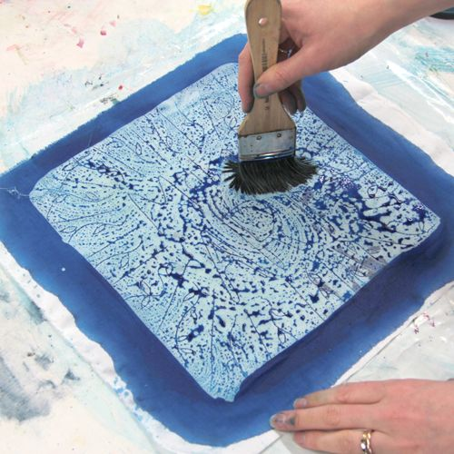5. Batik Printing : Teknik pembuatan batik printing adalah metode pembuatan batik dengan cara mencetak motif batik pada kain menggunakan mesin cetak. Teknik ini tergolong modern dan lebih cepat dibandingkan teknik pembuatan batik lainnya.
Semua teknik pembuatan batik di atas memiliki kelebihan dan kekurangan masing-masing. Namun, untuk membuat batik berkualitas, diperlukan ketelitian dan keahlian dalam mengaplikasikan teknik pembuatan batik yang dipilih. Selain itu, pemilihan bahan dan pewarna batik juga mempengaruhi kualitas batik yang dihasilkan. Semoga informasi ini bermanfaat bagi Anda! 😊
Distribusi Handal
Cara mendistribusikan kain batik sampai kepada customer dengan baik
Distribusi Handal!
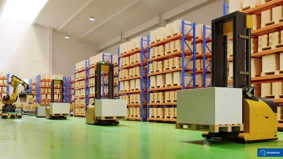Pengiriman yang efisien adalah kunci untuk memastikan kain batik berkualitas kami mencapai pelanggan dengan sempurna. Beberapa sistem distribusi yang digunakan agar kain batik dapat diterima dengan baik dan terpercaya yakni sebagai berikut.
1. Kepedulian Dalam Setiap Detil Setiap pesanan kain batik diproses dengan hati-hati dan dikemas dengan teliti untuk memastikan keamanan dan keutuhan produk selama perjalanan.
2. Keterpercayaan Logistik Unggul Kami bekerja sama dengan mitra logistik handal yang memiliki reputasi tinggi untuk memastikan pengiriman dengan tepat waktu. Dengan pemantauan yang ketat dan pemberian nomor pelacakan, pelanggan dapat melacak status pengiriman mereka secara langsung.
3. Pelayanan Pelanggan yang Ramah Kami juga memberikan layanan pelanggan yang responsif untuk menjawab pertanyaan dan memberikan bantuan sepanjang proses pengiriman. Kami berkomitmen untuk memberikan pengiriman barang yang mulus dan memastikan bahwa setiap pelanggan menerima kain batik berkualitas tinggi kami dengan aman dan tepat waktu.
Kepercayaan Anda dalam memilih produk kami sangat dihargai, dan kami berusaha untuk memberikan layanan distribusi terbaik untuk memenuhi harapan Anda. Dengan komitmen ini, Nesia Batik berharap dapat terus menjadi mitra pilihan Anda dalam menjelajahi keindahan kain batik berkualitas tinggi dan terpercaya.
Kerjasama Mitra
Sertakan Nesia Batik sebagai mitra Anda untuk kain batik yang terbaik dan berkualitas
Kerjasama Mitra!
Kami membuka peluang kerjasama mitra untuk bergabung dengan kami dalam memperluas jangkauan dan menawarkan keindahan kain batik berkualitas tinggi kepada pelanggan di seluruh dunia.
Apa yang menjadikan kerjasama dengan Nesia Batik spesial?
1. Desain Berkualitas Tinggi: Nesia Batik dikenal karena desain batik yang unik dan berkualitas tinggi. Bergabunglah dengan kami untuk menyediakan koleksi batik eksklusif kepada pelanggan Anda.
2. Kontrol Kualitas Ketat: Kami memastikan setiap kain batik yang diproduksi memenuhi standar kualitas tertinggi. Dengan Nesia Batik, Anda dapat yakin bahwa setiap produk yang Anda jual adalah representasi dari keahlian dan dedikasi kami.
3. Dukungan Pemasaran: Sebagai mitra, Anda akan mendapatkan dukungan pemasaran yang berkelanjutan. Kami bekerja sama dalam strategi pemasaran online dan offline untuk meningkatkan visibilitas produk Anda.
4. Fleksibilitas Pesanan: Kami memahami kebutuhan bisnis yang beragam. Nesia Batik menyediakan fleksibilitas dalam volume pesanan, memungkinkan Anda mengelola stok dengan lebih efisien.
5. Pelayanan Pelanggan Terbaik: Nesia Batik memberikan pelayanan pelanggan yang ramah dan responsif. Kami berkomitmen untuk menjaga kepuasan pelanggan dan mendukung pertumbuhan bisnis Anda.
Cara bergabung:
Jika Anda tertarik untuk menjadi mitra kami dalam menjual produk batik yang unik dan bermakna, silakan hubungi kami untuk mendiskusikan detail kerjasama lebih lanjut. Nesia Batik tidak hanya menawarkan kain batik, tetapi juga peluang untuk membangun kemitraan yang sukses dalam industri fashion.
Batik Mega Mendung adalah salah satu motif batik yang berasal dari Cirebon, Jawa Barat. Motif ini terkenal karena bukan berupa bunga atau dedaunan seperti batik Indonesia pada umumnya, namun berupa awan. Bahkan dalam buku Batik Design karya penulis asal Belanda, Pepin van Roojen, batik mega mendung dipilih menjadi sampul bukunya
Komentar Pengguna
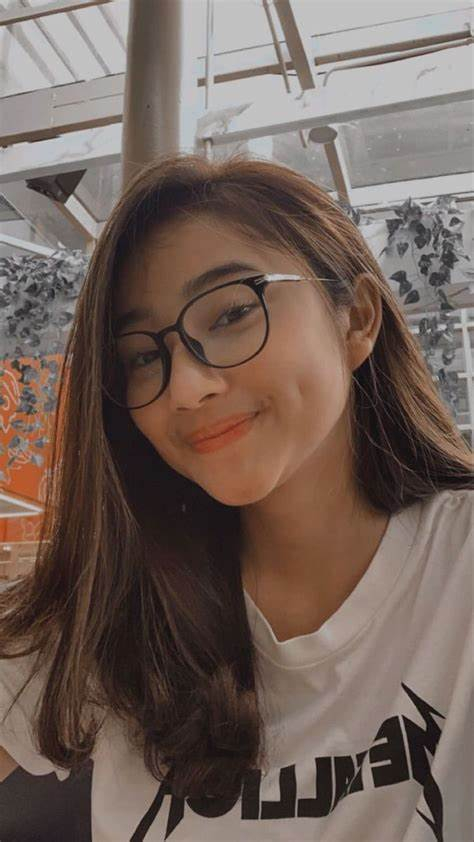
~ Diana Putri
Batik Mega Mendung, dengan motif awan yang unik, menciptakan karya seni berkualitas tinggi yang memadukan tradisi batik, teknik pewarnaan cermat, dan upaya keberlanjutan dalam kolaborasi dengan komunitas lokal.
~ Joko Winarno
Batik Mega Mendung, hasil harmonisasi tradisi batik dan kreativitas seniman, menciptakan kain indah dengan proses produksi teliti dan dampak positif bagi budaya dan komunitas lokal.
~ Indah Pertiwi
Batik Mega Mendung, melalui motif awan yang unik dan perpaduan seni tradisional, memikat dengan keindahan visualnya, sementara proses produksi yang teliti dan kolaborasi berkelanjutan menegaskan nilai-nilai budaya dan sosial yang kuat.
Dari namanya, pasti Kamu sudah menebak kalau motif batik satu ini pasti bergambar banteng. Benar. Batik Banteng Agung menjadi salah satu kebanggan warga Kota Batu Malang yang hak patennya dimiliki oleh seorang pengrajin bernama Anjani Sekar Arum.
Komentar Pengguna
~ Diana Putri
Kain Batik Seni Lukis memberikan kombinasi sempurna antara kenyamanan dan estetika, dengan bahan halus yang tidak panas untuk kenyamanan maksimal.
~ Indah Pertiwi
Berkualitas tinggi dan harga kompetitif, Kain Batik Seni Lukis menawarkan pilihan yang menguntungkan bagi mereka yang menghargai kualitas bahan dan desain.
~ Joko Winarno
Dengan penggunaan bahan 100% Cotton Prima (Kualitas Ekspor), kain batik ini tidak hanya stylish tetapi juga mengutamakan kualitas internasional untuk pengalaman berpakaian yang istimewa.
Batik Kudus Merawat Tradisi Kearifan Adat Budaya Lokal Seakan tak habis kekaguman, serta pujian untuk keindahan Tanah Air. Latar wajikan adalah simbol tolak bala', do'a yang merupakan permohonan keselamatan serta kesuksesan atau kedigjayaan. Batik yang dibuat dengan menggunakan teknik batik tulis bermotif Buketan Wajikan dengan Katun Primisima.
Komentar Pengguna
~ Joko Winarno
Batik Katun Modern Colet Solo menggabungkan keunikan Mega Mendung Cirebon dengan sentuhan modern, mengajarkan kebijaksanaan dalam mengelola emosi.
~ Indah Pertiwi
Batik Mega Mendung Cirebon pada Batik Katun Modern Colet Solo mewakilkan harmoni motif dan kenyamanan katun, sambil memberikan pesan filosofis.
~ Diana Putri
Keindahan Mega Mendung Cirebon, bahan katun, dan filosofi mengendalikan emosi
Batik Tulis Madura adalah seni tradisional kain batik dari Indonesia yang mencerminkan kekayaan budaya Madura melalui motif-motif alami dan teknik manual, menjadi bukan hanya pakaian tradisional tetapi juga simbol identitas dan warisan yang tekun dijaga oleh masyarakatnya.
Komentar Pengguna
~ Indah Pertiwi
Seni Batik Tulis Madura tidak hanya pakaian, tetapi juga cerminan identitas dan warisan budaya yang dijaga dengan penuh kehormatan oleh masyarakatnya.
~ Joko Winarno
Sentuhan seni tradisional yang memukau, mencerminkan kekayaan budaya dan menjadi simbol identitas masyarakat Madura.
~ Diana Putri
Batik Tulis Madura menggabungkan keahlian manual dengan motif alami, menciptakan bukan sekadar kain, melainkan warisan seni dan identitas yang dihargai.